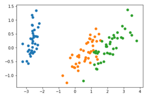

04 MACHINE LEARNING AND VISUALISATION
Contents
04 MACHINE LEARNING AND VISUALISATION¶
In this section, we will cover:
Types of Machine Learning
Methods of Learning
Visualisation Techniques
Visualisation for Cyber Security
Types of Machine Learning¶
Machine learning is an application of artificial intelligence (AI) that provides systems the ability to automatically learn and improve from experience without being explicitly programmed. Machine learning focuses on the development of computer programs that can access data and use it learn for themselves. We can essentially think of three components: an input (the data), a function, and an output. The machine is trying to learn the function that can map inputs to some form of output, which is achieved by minimising some error measure (sometimes described as maximising a fitness function). One possible approach is to consider the difference between the expected output and the predicted output as the error measure.
Supervised Learning: This is where data is provided with training labels that inform the machine what the data is. For example, if we have a set of images that we wish to classify, we can state that the output is what the image depicts (for example, is it a cat or a dog?). The input to the system is the raw image data assessed based on colour pixel values. The output of the system is a label of either ‘cat’ or ‘dog’. The function that converts pixel data to a label is what the machine attempts to learn. This is often described as classification since we are classifying image content.
Unsupervised Learning: This is where data is provided, however no training labels are given. In this sense, I need to provide some abstract way of informing the system on what to do with the data, which is expressed mathematically. The result is that the system will provide some output, and the distribution of the output is essentially what has been learnt. For example, if I gave the system pictures of cats and dogs, but with no labels, the system would therefore explore some set of measures that could be calculated on the data, to then provide some output that reduces the data. A typical example is clustering, where the system will cluster data that appears similar under some underlying assumption (for example, images with light-coloured pixels vs images with dark-coloured pixels).
Other forms of learning also exist, such as semi-supervised (where we may inform the system only on a subset of samples, as identified through some means which could be unsupervised), active learning (which involves a human-in-the-loop to label a small subset of data based on some underlying data attributes), and reinforcement learning (which is learning based on trial-and-error, popular for learning to play video games or robotic navigation).
Important to discuss also is the notion of training and testing. Typically, we develop a machine learning classifier based on training data. This is data that is representative of the problem domain that we are addressing, and our system may observe this data many times as part of adjusting the function that is calculated to map inputs to outputs correctly. Once we have completed sufficient iterations of this, such that the accuracy of mapping inputs to outputs on the training data is relatively high (ie., a high accuracy score is achieved), we would then test the model using a test dataset, that contains samples that were not in the training data, but are drawn form the same distribution. If we can achieve a high accuracy using the testing data also, then our model can be considered to be generalisable. Where the model performs high for training data but low for testing data, this can be described as overfitting our model to the training data. This is an important concept to grasp as the purpose of machine learning is to develop a system that can generalise to new data observations, and predict outputs on these, based on historical data patterns.
Search Optimisation¶
Earlier we introduced the concept of minimising some error measure, or error function. We can think about this as trying to find some minimum point on a curve – the challenge is that we do not know the minimum point ahead of time. Suppose we are at the red point on the curve, and we can look either one place left or right. By stepping along we can find the minimum point on the curve. However, the curve in many challenges is not so simple. Here, we may then find many local minima, and so we may find a local mimima that is not the overall global minima. This is why we attempt many different solutions, in the hope of avoiding local minima so that we find the global minima. Of course, in many applications, our curve may not be such a simple 2-D curve – it may be a 3-D surface or a much higher-dimensional space beyond what we can visually convey.
Methods of Learning¶
Linear Regression: Widely used in statistics, linear regression is an approach for modelling the relationship between a dependent variable and one or more explanatory, or independent, variables. This essentially gives a continuous value prediction of some outcome, based on a set of numerical inputs. For example, imagine I want to predict house prices in my local area. If I know number of bedrooms and listed price, I can develop a mathematical model to express this, where number of bedrooms is the input, and price is the output. For any number of bedrooms within my distribution, I can then predict the output price. Of course, the model may be wrong, and would likely require more attributes, such as garden size, access to schooling, whether there is a driveway, and many other factors. We see here how multiple inputs variables will inform a single output value. I could model whether a network packet is malicious or benign in a similar fashion, where multiple inputs inform a single numerical output. The important thing to note here, is that this will only model a linear relationship – i.e., there is strong linear correlation between the inputs and the output, and so this is often too simplistic for many real-world challenges, but does at least provide a useful starting point. Linear regression can be expressed in the form: y = mx + c, where m is the gradient of the line, and c is the y-intercept of the line. We can calculate the Mean Squared Error (MSE) to measure how closely the data fits the line, where the smaller this value is, the closer the fit.

Clustering: Here we want to observe when different observations form groupings of similar behaviour. We have discussed earlier the idea of clustering malware as malicious or benign. Similarly, we may have some data that is unlabelled, and we want to assign some labels to this. A popular method for this is known as k-means clustering, which will aim to identify k unique clusters within a given dataset, where data points are grouped together based on their collective mean values. Essentially, we begin with k randomised points, and for each point within our data, we determine which of our k points the data is closest to, so that we can assign a label. Once we have assigned a label to all data points, we update our k points so that each k point is the centroid of the group – which essentially is the mean in both the x and y axis, assuming we are dealing with 2 attributes in our data. We continue this process until we find a solution where the k points no longer change, and therefore our solution has stablised. We could essentially say we have minimised the error (the distance required to update the values). The practical session will delve into clustering further.

Support Vector Machines: Similar to how we have described our clustering approach above, SVM works through iterative search to find an optimal solution. Likewise, just as linear regresssion provides a line-of-best-fit through the data, SVM aims to fit a line that provides a decision boundary so that data points can be classified. Specifically, we measure the euclidean distances between data points nearest to the decision boundary. The objective is to maximise the distance between points and the decision bounary. The euclidean distance essentially measures the distance as a diagonal distance (think about the long side of a triangle, and how you would calculate this distance using Pythagorean Therorem). We can use the same formula as described earlier for linear regression, y = mx + c, to characterise the decision boundary line.
Dimensionality Reduction: Earlier we commented that our search optimisation may be in some higher dimensional space. We often use 2D or 3D visualisations to convey them simply because we can not easily observe dimensionlity higher than this. Yet, some dataset that has 100 different numerical attributes about each data instances could be considered to be a high dimensional dataset (100-dimensional). Is there a meaningful way that we can visualise this data to identify data instances that mayshare similarities, or at least may make it easier to summarise the key characteristics of the data instance. Dimensional reduction aims to achieve this, such that we can preserve the structure of the data in a low dimensional space that can be easier understood and visualised.
Principal Component Analysis (PCA) is a widely used method of dimensionality reduction. For a given dataset, it essentially seeks to find the direction (or vector) of greatest variance through the data. Suppose we have some points in 2-dimensions. We can fit a line through this data, much like we have seen already. Then, we could treat this line as a new “axis” for our data, and essentially map our points against where they occur on this line. We could also imagine a similar approach if we wanted to map 3-dimensional points to 2-dimensions, by finding a plane that all points could be mapped on to (where we say plane, imagine this as a flat piece of paper being held at some orientation within our 3-dimensional points, and then placing a dot on our page where each point occurs). Other methods of dimensionality reduction include t-distributed stochastic neighbourhood embedding (t-SNE), and uniform manifold and projection (UMAP). Dimensionality reduction is useful as part of unsupervised learning, where we want to cluster data but have no training labels to inform our process.
Neural Networks: Probably the most commonly described form of machine learning in use today is the neural network. The name derives from the notion of synapses in the brain firing when they receive a signal, where many signals contribute towards whether a synapse should fire or not. Here, we have an input layer (red) which takes in some attributes about our data - for example, a set of numerical features that have been derived. For classification, the output layer would relate to the possible output classes of the data, where the highest scoring node would be the predicted class. In between are a set of hidden nodes that the machine will attempt to learn a suitable numerical value for, such that input nodes map to the expected output nodes. We do this using matrix multiplication. We will show this further in the practical session. The important detail to know is that neural networks are calculated as y = sigmoid (Wx + b), where x is my input vector (e.g., 5 numerical values in a 5-by-1 column), W is a weights matrix (where the matrix has the same number of columns as the number of rows in our input vector), and b is a bias vector that is added as a constant. The sigmoid function then scales our resulting vector so that our values remain within our set bounds (either -1 and +1, or 0 and 1). What we have described is often considered as a feed-forward network. Since our model is likely to incorrectly predict our data initially, we need a method for updating the weight values in our hidden nodes, since these essentially dictate how our input relates to our output. This is done using a technique called backpropagation. This essentially works like the search optimisation technique described earlier, where we seek to minimise the distance between the predicted values and our expected values, which is achieved through the process of training the neural network.
For our purpose here, we want to understand what different techniques exist for machine learning. Here we are not going to focus too much on the underlying mathematics used, although it is important to understand how these methods operate and why. Neural networks have formed the basis of much modern machine learning research. The concept of Deep Learning comes from having many hidden node layers in a neural network structure, such that it is a deep neural network. Furthermore, there now exist a wealth of different architectures based upon the notion of deep learning. Convolutional Neural Networks have become particularly popular for image analysis tasks. This is because instead of having single vector inputs, they use square regions as input, which means they are much better at preserving spatial attributes such as the relationship between pixels in an image. The final method to mention here is Recurrent Neural Networks, which are designed to work on sequential forms of data. Whereas our previous learning models have treated each data instances as a discrete observation, in a recurrent model, each instance of data is dependent on what came before. A common example is language modelling – so similar to subsequence anomalies discussed in Section 3, our model could learn that the input phrase “The quick brown fox jumps over the lazy” is completed by the word “dog”.
We have covered a lot of ground in this section, but hopefully this helps to give you a brief introduction to the diferent machine learning models that are used. In particular, we have seen how each model takes an input, performs some processing or operation, and provides an output. We have also seen how this is based on minimising or maximising some function over time through the process of training to achieve the final output. It is important to think about the task to be solved as to which method is most appropriate – are we hoping to predict a class (classification), a continuous value (regression), a group (clustering), or some complex non-linear function (neural network)?
As a slightly aside, when using machine learning for the purpose of cyber security, it is vital that we consider the case where an adversary is able to manipulate the performance of our model. You may have seen examples of this, where image recognition systems can be made to misclassify objects, despite a well-trained model being used. Think about the impact here for up-and-coming domains such as autonomous vehicles and healthcare. This is why when we think about AI for cyber security it is fundamental that we also think about the cyber security of AI. We are merely scratching the surface here, however there is much research activity in the area of adversarial learning.
In the practical guides for this section, we will cover how to implement clustering, linear regression, and neural networks, using Python and the Jupyter Notebook environment.
Visualisation Techniques¶
Here we will give a brief overview of different visualisation techniques, highlighting where they are effective and how they should be used.
Multi-series Line Chart: Line charts are effective for time-series data, where the horizontal x-axis would denote time, and the y-axis would denote some numerical attribute. With colour-coding, we can depict multiple lines on the same chart, where the purpose is for comparison between two or more observed measures.
Bar Chart: This depicts numerical attributes for different discrete classes along the x-axis, rather than some continuous value. This could be some count obtained for various countries, or observations of different malware varients. Height of the bar denotes the numerical value.
Scatter Plot: This is useful for comparing two different numerical attributes together, for example the number of bedrooms in a house and the associated house price. Another example may be the RAM and CPU usage of infected and benign workstations, for studying behaviour differences in a malware investigation. The scatter plot helps to identify the relationship between two indendepent variables, often referred to as the correlation between two variables. Highly correlated variables will share some statistical pattern (e.g., either that they increase or decrease together which would be a postive correlation, or that when one increases the other decreases – and visa versa – which would be a negative correlation).
Bubble Chart: This is actually very similar to a bar chart, in that it shows different classes or categorical attributes, and it shows a numerical value associated with this – however here rather than a bar we use a bubble. Firstly, the plot is more visually appealing than a bar chart, and so may be more suitable for engaging the desired audience. Secondly, there is no sense of order – a bar chart runs left to right, whereas bubbles are dynamic and can place wherever, be it automatically or manually. Finally, bubble charts are arguably more compact than bar charts – where a very tall bar may result in lots of white space. However, bubble charts are known to be misleading. Firstly, is the numerical quantity mapped to the diameter, the radius, or the area of each bubble? In theory, you could use any of these geometric properties of the shape, resulting in different scaling of each entry. Secondly, how easy is it to compare one bubble to the next beyond whether it is larger or smaller, for example, how easily can I identify where an attribute to twice the value of another? In such scenarios the bar chart is more suitable – comparing two lengths when side-by-side is much easier than comparing two “bubbles” – be it by diameter, radius or area – when they are arbitrarily placed on the plot. As mentioned, the bubble chart is about creating an impactful visualisation that captures the attention of the audience, rather than providing a scientific analysis tool.
Force-Directed Graph: We discussed how a scatter plot can show relationships between attributes, however this tends to be for a one-to-one mapping between two variables. How do we show one-to-many relationships? Force-directed graphs help, where points are connected by edges, and there may exist a one-to-one or one-to-many relationship between points. A prime example is a social network graph, where nodes are people and edges are whether the two people know each other (i.e., are connected). The same can apply to computers on a network. They are described as force-directed since nodes are not positioned with a fixed x and y point like on a scatter plot, but instead, nodes are positioned using a physics-based force algorithm that will treat each connection like elastic where connected points will be pulled closer together. This force layout helps to further draw out relationships between nodes, especially when a high number of nodes are depicted. However, force-directed networks should be used carefully. In a situation where many nodes are all connected together, this creates strong forces pulling together and essentially forms a cluster – often described as a ‘hairball’. If you want to show many connected nodes together, you should consider how to best filter the data so that it can remain informative.

Parallel Coordinates: Whilst scatter plots are useful, they are limited to 2 or 3 dimensional spaces. Can we visualise information that may be higher dimensionality? Parallel coordinates achieve this, where each vertical line represents a data axis (like the x and y of a scatter plot would), however rather than denoting a point on each axis, we use a line to connect a pair of axes. We do this for each pair as the axes are displayed, so that a single data instance is essentially depicted by a line that crossed each axis. We can identify correlations between pairs of neighbouring axes – do the lines all go up or down together, or do they cross over? As in other chart types, we can colour code by class. We can also filter (or brush) axes, much like we may set a region of a scatter plot. Parallel coordinates are therefore very effective – however they may be unfamiliar to some users, and so there is a learning curve to overcome. Another limitation is that correlations can only be assessed on neighbouring axes – some implementations allows axis reordering however this can create additional overhead for the analyst.
Treemap and Sunburst: Treemaps are excellent for depicting hierarchy. They were initially developed for conveying information about computer files and folder structure. Each entry is scaled based on the numerical value being considered (e.g., file size). Since a group of files may exist within the same folder, we can group them together and therefore show the collective size of the folder also (shown either by a bounding box, or by colour coding). Since the full rectangular area denotes the full space available (e.g., the entire hard drive), it can show size in relation to the full disk, and means that available space is also shown (essentially as a blank area of the chart). The sunburst is a similar concept, except it is mapped to a circle rather than a rectangular area. The hiararchical structure works outwards in the sunburst, and so is not as compact as the treemap, however, it does show proportion well just like the treemap and it does so in a striking and visually appealing way, therefore making it good for audience engagement. Some modern operating systems (e.g., Ubuntu) use the sunburst to show disk space analysis.
Star Plots: The final visualisation type we will consider here is the star plot. These essentially map multiple attributes in a small and compact format, often referred to as a glyph (where a glyph is a small depiction of multi-variate data). In this example, 8 attributes are mapped in each glyph. The mapping is similar to how a parallel coordinates plot works, except here the layout is radial rather than left-to-right.
Visualisation for Cyber Security¶
Having introduced differe forms of visualisation, here we will now look at how these can be used for the purpose of cyber security. Of course, this is not an exhaustive set, but will help to illlustrate the effectiveness of visualisation techniques for analysing large complex data, which is essentially what we aim to do as part of understanding and defending large corporate networks. For more details, and further examples, I recommend looking at the two books: Applied Security Visualization by Raffael Marty and Security Data Visualisation by Greg Conti, as well as the primary text for the course.
In this example, we see parallel coordinates being used to depict network traffic across a set of 7 attributes. This image shows a comparison between regular wireless network traffic, compared against a WEP key cracking attack against the network. We can see the difference between the two activities clearly in the two images, where essentially the WEP cracking attack is scanning all available ports and uilising a single protocol. The approach is detailed further in the paper, “Visualizing Networking Activity using Parallel Coordinates” by Tricaud et al.
In the paper “Fast detection and visualization of network attacks on parallel coordinates” by Choi et al., they propose the use of parallel coordinates for network traffic analysis, but use this to define small glyphs that are indicative of network behaviours. The distinguishable shape of the data plots can be treated as a signature here, to easily recognise behaivours such as worm, port scan, or DDoS.
As mentioned earlier, similar to this is the star glyph, which maps axes in a radial manner to create a connected polygon, where the length from the centre to each point denotes a variable. In the example shown here, we have 8 attributes about network packet captures mapped, and so we can show individual packets as glyphs for comparison. Glyphs are widely used in various applications, for example, insider threat detection. This example shows 18 individuals from a company and their behaviours during a 12 month period. Even with such volume data, some differences can be identified (suspicious cases are highlighted with the grey circle, two of these users are denoted in blue as potentially malicious).
We have mentioned node-link diagrams (also referred to as force-directed) for social media analysis and network profiling. Here we show three images to convey this further. In particular, we can see the complexity of the node-link diagrams as more nodes are included, and where a central node has many connections, we start to see the hairball effect mentioned earlier. This is where good visual analytics planning is required to have appropriate forms of filtering and selection to make the chart useable.
Treemaps were discussed earlier, and here we see snort alerts mapped against a tree map to show the volume of alert types, where alerts will naturally exist as part of a group (i.e., within a hierarchy).
A final example to consider is the use of visualisation for binary file analysis (we will discuss this in further detail later in the course). Greg Conti shows an excellent example of this, where binary data is mappped to pixel values to produce an image of the data. We can examine what the same image may look like using different image compression schemes (e.g., bmp, png, gif, jpeg), as well as how a Microsoft Word document may appear once password-protected or encrypted (here we see that the password-protected file does not encrypt the original data).
Visual Channels¶
The final point to cover in this session is on visual channels. All visualisations are made up of visual channels, and so we need to ensure that these channels are used effectively. Some examples of channels would be colour, size, orientation, shape, texture, opacity. Spatial positioning is also a visual channel – for example how data is mapped to an axis or positioned within a space. How do we know which channels should map to which data attribute? There are no fixed rules as such – but as we discussed some of the weaknesses in visualisations earlier, we need to consider what may work best for our data. Mapping a single numerical value to a circle for example can cause confusion. We need to think about the type of data being shown. There are 4 fours we need to recognise: nominal, ordinal, interval, or ratio. Nominal data can be text labels (e.g., name) or categories (e.g., car type) – there may not be a specific order to these – we may use alphabetical ordering but that is purely for convenience. Ordinal data does have some order to it, however the difference between each possible value is unknown or not exact (for example, a threat level scale or a likert scale). Interval data is ordered and the interval between each data point is known – for example, temperature values. Ratio data is the same, however it has an absolute zero. Temperatures can be negative, however a packet size or a count of some data would be a ratio as you would not have a negative value for this.
What do we mean by “Visual Analytics”?¶
“Visual Analytics is the science of analytical reasoning supported by a highly interactive visual interface.” [Wong and Thomas 2004]
“Visual Analytics combines automated analysis techniques with interactive visualisations for an effective understanding, reasoning and decision making on the basis of very large and complex datasets” [Keim 2010]
“Detect the expected and discover the unexpected”
We have already discussed statistics, machine learning, and visualization. Visual analytics is essentially the combination of all three – the use of interactive visual interfaces to support statistical and analytical reasoning about data. A key emphasis here is the interactivity of the system – much like the knowledge generation feedback loop and the data science workflows discussed in Section 2, visual analytics is about how we develop analytical reasoning through iterative use of the system to interact, filter, and zoom in on key details of the data, as part of the exploration process. We have discussed static forms of data visualisation in Section 5, however the greatest challenge of any visualization is carefully deciding on what data should be shown, and how this should be represented. Visual analytics essentially allow us to interactively update the parameters of the visualization to create a dynamic and engaging interactive experience that helps inform decision making.
If we consider automated methods, and we consider visualization methods, what are their strengths and weaknesses? Automated methods scale well to large data, however they may suffer from local optima problems, or run in a “black box” fashion that does not facilitate understanding of their process. Visualisation methods can be interactive, but can suffer from scalability. Visual analytics aim to combine the best of both approaches, where a user will alternate between visual and automated methods, and provides a collaborative approach for problem-solving and story-telling between the user and the machine.
Let us consider the ability matrix here. We know that computers excel in some tasks, yet humans excel in others. Visual analytics aims to find the appropriate balance between the two. Often, people describe it as “providing insight” – yet, we need to consider “what do we mean by insight?”. Insight is something that is generated by a human, not a computer. So then how does a computer system (e.g., a visual analytics tools) help to generate insight? Arguably, visualization and visual analytics are about “saving time” in a manner that supports cognition.
Dashboards¶
Dashboards are now widely used in many analysis platforms. The term originates from the car dashboard – we do not need to know every detail about the underlying system, such as the exact operations of cylinders and other mechanisms under the bonnet, however we do need the key details such as current speed, and we need a means to be alerted when things go wrong. The same is true in many cyber security scenarios – what we want to know is whether the infrastructure is operating as intended, some key details about the operation of the infrastructure, and if there is a problem, will the dashboard alert us correctly and in a timely-manner, with useful and meaningful information such that we can diagnose the problem and return to normal operations. A simple Google search for “visual analytics dashboard” will reveal a number of different designs and structures that have been used. Key summary statistics shown using pie charts and radial plots are often quite common – used in a number of “business” dashboards for presenting company financials. Key here is that these are for explanatory visualisation, they help convey the story or narrative. When interacting with a dashboard, it is about exploration, and so we can begin to understand how a dashboard can help achieve both focus-and-context, or overview and detail. Many dashboards may also “link” visualisations – whereby interactions and selections in one chart may update all related charts. Combining interaction across different linked visualisations makes dashboards a very powerful and effective form of exploration.
Further reading:¶
Jupyter Notebooks (Python)
scikit-learn
Tensorflow
Keras
ML tools becoming part of popular tools like Splunk and elastic:
Elastic have some useful blog posts that discuss machine learning further in their SIEM platform.
Data frame analytics example - elastic
Machine learning in cybersecurity: Training supervised models to detect DGA activity
Machine learning in cybersecurity: Detecting DGA activity in network data